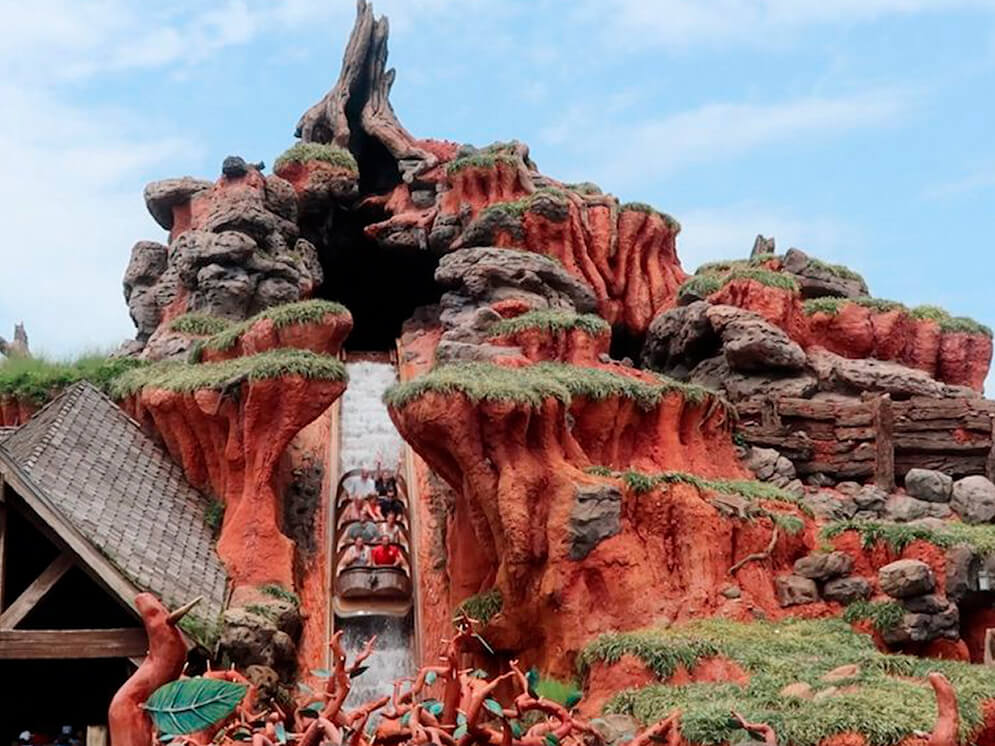
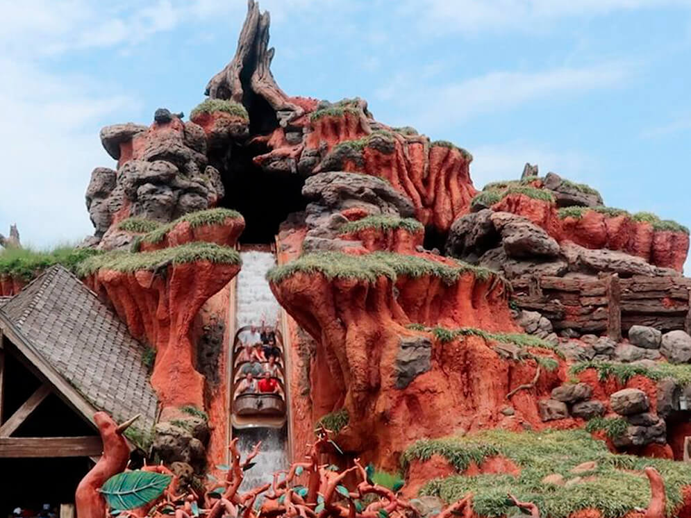

Parques de Disney

Magic Kingdom


 

Panorama
Cuando atraviesen las puertas del Reino Mágico y tomen el primer mapa del parque tendrán en sus manos el menú quizá más amplio de atracciones y shows que un parque temático pueda ofrecer.
La aventura, la fantasía, el futuro, la nostalgia, el lejano oeste, las princesas, los castillos, todo se mezcla en dosis ideales para lograr un cocktail perfecto difícil de igualar.
Chicos, grandes y más grandes reciben el shot más grande de magia durante su estadía mientras avanzan las horas en el parque más popular
Algunos acusan a Magic Kingdom de anticuado en su oferta de atracciones. No es cierto si la calificación intenta descalificar: Disney deliberadamente mantiene clásicos que conforman su esencia como It`s A Small World, Indy Speedway, Peter`s Pan Flight, Splash Mountain o Jungle Cruise aún a costa de soportar una mirada a veces despectiva de los amantes de la última tecnología.
Sin embargo, los números hablan por sí solos: Magic Kingdom sigue siendo -por lejos- el parque más popular y muchas de las atracciones “viejas” son las más demandadas del parque. En este punto, avalar esas críticas sería como avalar críticas a viejos clásicos del cine solamente por el año en que fueron creados.
Shows y Desfiles de Magic Kingdom
Los shows y los desfiles son otra pata esencial de un día en Magic Kingdom, seguramente más que en ningún otro parque.
Las presentaciones teatrales que ocurren en el frente del Castillo de Cenicienta, al final de Main Street USA y los divertidos desfiles de la tarde proveen la atmósfera de fantasía y alegría que es marca registrada del parque insignia de Walt Disney World Resort.
Disney ha renovado consistentemente estos shows y desfiles: Festival of the Fantasy, Mickey´s Royal Friendship, Move it…, Muppets Presents:… o Once Upon a Time son ejemplos de -relativamente- recientes adiciones.
El desfile nocturno dejó de presentarse en las noches desde 2017 y Wishes fue reemplazado exitosamente Happily Ever After en mayo 2017: el viejo clásico fue reemplazado por un show que también está destinado a transformarse en un clásico, manteniendo la tradición de los shows de fuegos al ritmo de la música que sólo Disney puede crear.
Imposible que algún visitante se retire del parque sin una mueca de sonrisa en su rostro.
Animal Kingdom


Panorama
Inaugurado el 22 de abril de 1998 es el más nuevo de los parques de Disney y mezcla exhibiciones de miles de animales en increíble ambientación natural, con shows al nivel de Brodway y emocionantes atracciones.
A la vez exótico, salvaje, misterioso, naturalmente bello y excitante, los imaginieros de Disney recrearon paisajes de selvas, sabanas africanas, bosques húmedos y otros hábitats naturales de regiones del mundo vinculadas a los animales como Africa y Asia.
En 2017 incorporó la región Pandora: The World of Avatar, utilizando la película de James Cameron y aquel planeta lejano como una metáfora de nuestra naturaleza y el cuidado del medio ambiente. Contra todo pronóstico, la nueva región se integra perfectamente con la temática del parque.
A pesar de su tamaño (es el más grande de los parques de Orlando), grandes superficies están reservados a los animales y recorrerlo es relativamente sencillo y siempre fascinant
El día en Anumal Kingdom
Durante mucho tiempo, Animal Kingdom fue un parque estrictamente diurno. Con cierres habituales a las 17, 18 o 19hs y sin extra magic hours nocturnas para huéspedes de hoteles Disney.
embargo todo ha cambiado en 2016. Con una gran campaña de difusión, Disney tomó la decisión de devolver las actividades nocturnas al parque.
Se estrenó un show de cierre nocturno, la versión “sunset” del Kilimanjaro Safari, la majestuosidad del Arbol de la Vida despertando desde la oscuridad, fiestas callejeras y la aventura de re-descrubrir atracciones como Expedition Everest sin la luz del sol.
En 2017 llegó el estreno de Pandora, sus populares atracciones y su flora y fauna bioluminiscente que se enciende por las noches.
Los horarios de cierres llegaron en ocasiones hasta la madrugada.
Epcot


Panorama
Cuando atraviesen las puertas del Reino Mágico y tomen el primer mapa del parque tendrán en sus manos el menú quizá más amplio de atracciones y shows que un parque temático pueda ofrecer.
La aventura, la fantasía, el futuro, la nostalgia, el lejano oeste, las princesas, los castillos, todo se mezcla en dosis ideales para lograr un cocktail perfecto difícil de igualar.
Chicos, grandes y más grandes reciben el shot más grande de magia durante su estadía mientras avanzan las horas en el parque más popular
Algunos acusan a Magic Kingdom de anticuado en su oferta de atracciones. No es cierto si la calificación intenta descalificar: Disney deliberadamente mantiene clásicos que conforman su esencia como It`s A Small World, Indy Speedway, Peter`s Pan Flight, Splash Mountain o Jungle Cruise aún a costa de soportar una mirada a veces despectiva de los amantes de la última tecnología.
Sin embargo, los números hablan por sí solos: Magic Kingdom sigue siendo -por lejos- el parque más popular y muchas de las atracciones “viejas” son las más demandadas del parque. En este punto, avalar esas críticas sería como avalar críticas a viejos clásicos del cine solamente por el año en que fueron creados.
El día en Epcot
A pesar de su gran tamaño de Epcot y de prácticamente ser dos parques en uno, es factible conocer lo que el parque puede brindar en un sólo día de visita.
El tipo de atracciones o experiencias que encontrarán en Epcot pueden dividirse en dos categorías: las típicas de todo parque temático y otras que se asemejan más a una exhibición.
Ese grupo de experiencias de apreciación (muchas veces interactiva) provoca la necesidad de avanzar en el recorrido de manera menos frenética disfrutando más tranquilamente de los temas de interés. Verán este tipo de experiencias en Future World (por ejemplo Innovations o las actividades posteriores a Spaceship Earth) pero principalmente en World Showcase, en la zona de países.
El día termina siempre de manera espectacular con Epcot Forever, el show que desde 2019 reemplazó transitoriamente a Illuminations. En el futuro cercano el show HarmonioUS tomará definitivamente los cierres del parque en la laguna de World Showcase.
Sus atracciones más populares ofrecen Fast Pass pero al momento de seleccionar las tres desde casa las encontrarán separadas en grupos: las más codiciadas (Frozen Ever After, Soarin, Test Track y Epcot Forever) en el grupo 1 y las otras en el grupo 2. Sólo podrán elegir una del grupo 1 y las restantes dos selecciones deberán ser del grupo 2.
Hollywood Studios


Panorama
A finales de la década de 1980 Universal anunció que construiría un parque temático en el área de Orlando.
La reacción de Disney fue inmediata: Hollywood Studios, una manera genial y mágica de vivir el mundo del cine y la televisión.
Grandes franquicias y clásicos de hoy y ayer dan vida a las distintas experiencias del parque: The Twilight Zone, Indiana Jones, Cars, Beauty & The Beast, Frozen y otros hits de Pixar, el canal infantil Disney Jr., The Muppets, Toy Story y por supuesto… Star Wars.
Dos áreas temáticas completas se agregaron en 2018 y 2019, Toy Story Land y Star Wars: Galaxy´s Edge, el parque, que se percibía pequeño un tiempo atrás, ahora apenas puede recorrerse en un sólo día de visita.
Todos quieren visitar el patio de Andy repleto de juguetes, pilotear el Millennium Falcon, caer sin red en el ascensor de Tower of Terror o llegar al concierto de Aerosmith a toda velocidad, disfrutar de shows al mejor estilo Broadway o maravillarse con el espectáculo de cierre.
Hollywood Studios es un equilibrado cóctel de atracciones super populares, shows imperdibles, franquicias cinematográficas icónicas y varias alternativas para comprar y comer.
Factores a considerar en tu visita a Hollywood Studios
No todas las familias son “tipo” y, por ejemplo, tienen bebés o adultos mayores en el grupo, no todos se permiten caminar sin parar por un día completo, no superan determinadas restricciones de altura, están enfocados en princesas u otros personajes o pueden ir al parque dos veces en sus vacaciones. Además, los gustos respecto de las atracciones pueden diferir.
Esta herramienta debe ser usada con flexibilidad. Como una guía concreta para entender cómo es mejor recorrer el parque.
Cada familia es diferente, cada día en Hollywood Studios también es diferente, el humor de los chicos no puede predecirse. En ocasiones, aunque el plan diga A las ganas e instinto dirán B. En todos esos casos, ajusten la estrategia a la realidad y necesidad del momento. La otra opción sólo provocará malhumor.
Hollywood Studios completó su transformación, en 2018 incorporó Toy Story Land y en 2019 Star Wars: Galaxy´s Edge. El 4 de marzo de 2020 la atracción Mickey & Minnie Runaway Railway se transforma en la frutilla del postre.
Llegando muy temprano y seleccionando muy bien las experiencias es factible experimentar todo lo relevante del parque en una sola visita, aunque deberán correr y asumen el riesgo de resignar alguna atracción si el día no fluye perfectamente.
Hollywood Studios es un parque relativamente compacto. Pasar de un punto a otro puede tomar entre 3 a 6 minutos en promedio. Muy poco tiempo “perdido” en caminatas.
Atracciones de los parques de Disney
| # | Parque | Atracción | Puntaje |
|---|---|---|---|
| 1 | Magic Kingdom | Splash Mountain | ❤❤❤❤❤ |
| 2 | Magic Kingdom | Space Mountain | ❤❤❤❤❤ |
| 3 | Hollywood Studios | Star Tours | ❤❤❤❤❤ |
| 4 | Hollywood Studios | The Twilight Zone Tower of Terror | ❤❤❤ |
| 5 | Animal Kingdom | Expedición Everest | ❤❤❤❤❤ |
| 6 | Epcot | Test Track | ❤❤❤❤ |